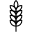

1-7 Abril
Presidente: Maximiliano Michelena M. Michelena
Oración de inicio: Ricardo Villasante R. Villasante
 Tesoros de la biblia
Tesoros de la biblia
| 10 min | "Jehová es mi Pastor" | Cristian Hernández C. Hernández |
| 10 min | Busquemos perlas escondidas | Valentín Álvarez V. Álvarez |
| 4 min | Lectura de la Biblia | Lucas Aguiar L. Aguiar |
Seamos mejores maestros
| 3 min | Empiece conversaciones | Adriana Montgomery - Niria de Echeverriborda A. Montgomery - N. de Echeverriborda |
| 4 min | Haga revisitas | Alicia de Varzi - Rosa Cruz A. de Varzi - R. Cruz |
| 5 min | Haga dicípulos | Amneris Correa - Melissa De Brum A. Correa - M. De Brum |
Nuestra vida cristiana
| 15 min | Rechazamos la voz de los extraños | Luis Costa L. Costa |
| 30 min | Estudio bíblico | Roberto Aguirre - Jorge Ramírez R. Aguirre - J. Ramírez |
Oración de conclusión: Renzo Tissoni R. Tissoni
25-31 Marzo
Presidente: Pablo Varzi P. Varzi
Oración de inicio: Javier Caro J. Caro
Tesoros de la biblia
| 10 min | Se profetizaron detalles de la muerte de Jesús | Federico Michelena F. Michelena |
| 10 min | Busquemos perlas escondidas | Federico Picún F. Picún |
| 4 min | Lectura de la Biblia | Juan Montgomery J. Montgomery |
Seamos mejores maestros
| 3 min | Empiece conversaciones | Paula Castro - Nelly de Villasante P. Castro - N. de Villasante |
| 4 min | Haga revisitas | Carolina Lezama - Stella Pereyra C. Lezama - S. Pereyra |
| 5 min | Discurso | David Villaroel D. Villaroel |
Nuestra vida cristiana
| 5 min | Necesidades de la congregación | Roberto Aguirre R. Aguirre |
| 30 min | Estudio bíblico | Eduardo Michelena - Alejandro Ferreyra E. Michelena - A. Ferreyra |
Oración de conclusión: Daniel Da Silva D. Da Silva
18-24 Marzo
Presidente: Roberto Aguirre R. Aguirre
Oración de inicio: Jorge Machado J. Machado
Tesoros de la biblia
| 10 min | "Los cielos declaran la gloria de Dios" | Ricardo Villasnate R. Villasante |
| 10 min | Busquemos perlas escondidas | Aníbal Echeverriborda A. Echeverriborda |
| 4 min | Lectura de la Biblia | Juan Fagúndez J. Fagúndez |
Seamos mejores maestros
| 3 min | Empiece conversaciones | Mirta de Montgomery - Yolanda Olmos M. de Montgomery - Y. Olmos |
| 4 min | Empiece conversaciones | Susana González - Elizabeth Díaz S. González - E. Díaz |
| 5 min | Explique sus creencias | Alejandro Ferreyra A. Ferreyra |
Nuestra vida cristiana
| 15 min | Obervar la creación fortalece la fe | Javier Vázquez J. Vázquez |
| 30 min | Estudio bíblico | Daniel Da Silva - Miguel Ferreyra D. Da Silva - M. Ferreyra |
Oración de conclusión: Martín Casal M. Casal
11-17 Marzo
Presidente: Luis Costa L. Costa
Oración de inicio: Aníbal Echeverriborda A. Echeverriborda
Tesoros de la biblia
| 10 min | "Jehová es [...] mi libertador" | Álvaro Álvarez Á. Álvarez |
| 10 min | Busquemos perlas escondidas | Renzo Tissoni R. Tissoni |
| 4 min | Lectura de la Biblia | Javier Caro J. Caro |
Seamos mejores maestros
| 7 min | Bondad: Lo que hizo Jesús | Valentín Álvarez V. Álvarez |
| 8 min | Bondad: Imite a Jesús | Eduardo Michelena E. Michelena |
Nuestra vida cristiana
| 5 min | Necesidades de la congregación | Maximiliano Michelena M. Michelena |
| 10 min | Logros de la organización para el mes de Marzo | Luis Costa L. Costa |
| 30 min | Estudio bíblico | Pablo Varzi - David Villaroel P. Varzi - D. Villaroel |
Oración de conclusión: Miguel Ferreyra M. Ferreyra